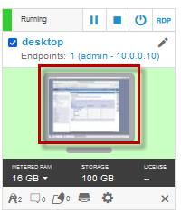
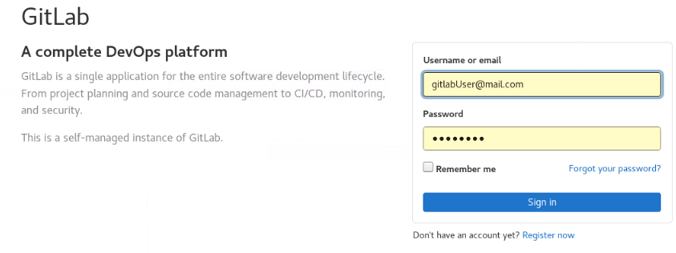

Promote application deployment from Dev to Staging environment using GitOps (ArgoCD and Kustomize)
This demo covers how to promote (deploy) the application to Red Hat OpenShift Staging environment using ArgoCD provided by the Red Hat Operator hub.
In the Coninuouus integration (CI) demo, you used OpenShift Pipelines (Tekton) to build and deploy the application to the OpenShift Dev* environemnt.
Once the application is tested and validated, the next logical step is to deploy the same application image to a staging environment for system testing.
This domonstration showcases continuous deployment (CD) of the Liberty application via the Open Liberty Operator, Argo CD and a Kustomize. Kustomize allows you to define the deployment diferences between Dev and staging environments. These differeces are YAML snippts and stored in the GitOps git repo as overlays over the base depoyment configuration.
Summary
This demo has the following steps:
- Pre-reqs to complete before the demo starts Configure the GitOps git repo
- Create the application in Git
- Clone the application code locally
- Create the application namespace in OpenShift
- Register the application with the Toolkit pipeline
- Push container imaage to staging namespace
- Configure Argo CD to monitor the GitOps repo
- Synch the repo with Argo CD to deploy the application
- Verify the application resources and deployed application
- Deploy version 2 of the applicaion using GitOps (Argo CD and Kustomize)
- Verify Version 2 deployment
- Review and Next Steps
Pre-reqs to complete before the demonstration
It is assumed that you are using the Teaching your monolith to dance workshop environment for the demonstration. The environment runs in Skytap.
Follow the instructions in the URL below to reserve an environment.
-
Using the link below, open a new Browser window or tab. Then, follow the instructions to reserve single environment for the demonstration:
https://ibmtechsales.github.io/was-appmod/environments-setup/
-
Start the Skytap environment if it is no already started
-
After the VMs are started, click the desktop VM icon to access it.

The Desktop Linux Desktop is displayed. You execute all the lab tasks on this desktop VM.
-
Login with ibmuser ID.
-
Click on the ibmuser icon on the screen.
-
When prompted for the password for ibmuser, enter "engageibm" as the password:

-
-
Resize the Skytap environment window for a larger viewing area while doing the lab. From the Skytap menu bar, click on the "Fit to Size" icon. This will enlarge the viewing area to fit the size of your browser window.

-
Open a terminal window by clicking its icon from the Desktop toolbar.

-
Login to the GitLab platform in the demo environment.
a. From the Firefox browser, click the Gitlab bookmark on the bookmark toolbar, or go to the following URL:
http://gitlab.demo.ibmdte.net/users/sign_inb. Login to Gitlab. Username: gitlabUser@mail.com and Password: passw0rd. Then click sign-in

-
Create a new project in Gitlab to serve as the gitOps repo
a. Click the Create a project option
b. Click Import project
c. Click the Repo by URL option as the import from source repo
d. Complete the import repo details using the following values:
- Git repository URL: https://github.com/IBMTechSales/openshift-workshop-was.git
- Project name: cos-gitops-repo
- Visibility leve: Public


e. click the Create Project button.
-
Login to OpenShift. Type
oc loginto login to OpenShift. Use ibmadmin for the username and engageibm for the password.
-
Login to OpenShift Console UI.
- From the browser, click the openshift console bookmark located on the bookmark toolbar and login with the htpasswd option.

- Login to the OpenShift account with username ibmadmin and password engageibm

-
Change to the cloned github directory where the pipelines materials are downloaded
cd /home/ibmuser/openshift-workshop-was/labs/Openshift/DevopsManagement/tekton-pipeline
The Demonstration Steps
Configure the GitOps repo
Create an instance of the template GitHub GitOops repository in your own GitHub account using the following steps:
-
Click here to create an instance of the template (not that if a
404error is displayed you will need to sign in to your GitHub account and then reload the page) -
Ensure that the
ownerfield is set correctly, and then enter a uniquerepository name -
Leave the repository as a
publicrepository and click Create repository from this template

Clone the application code locally
The newly created repository will be shown in your browser. In order to clone the code locally, use the following steps
-
In the browser, click the green Code button and use the *copy icon to copy the
https://github.com/...URL -
Navigate to a
directory/folderon your local machine where you want to clone the code -
Enter the following command, pasting the copied URL after the
git clone:
git clone <URL>- Navigate in to the cloned code. The
folderwill have the same name as therepository
cd <REPO_NAME>Create the required branch in the repo
In this section you will create a branch named test and push the code back up to GitHub
- Enter the following commands to create a new branch and push the changes back to GitHub:
git checkout -b test
git push -u origin testConfigure a new test namespace
Create a new OpenShift project for the test namespace using the following steps
- Issue the following command
igc namespace cos-with-toolkit-test- Issue the following command to allow the application image to be pulled from the
devnamespace
oc policy add-role-to-group system:image-puller system:serviceaccounts:cos-with-toolkit-test -n cos-with-toolkit-devConfigure the pipeline for GitOps
- Issue the following command to switch back to the
devnamespace
oc project cos-with-toolkit-dev- Issue the following command to configure the required
ConfigMapthat will be used by the Pipeline
igc gitopsRerun the pipeline
Now that the GitOps repo is configured, you can rerun the pipeline and it will update the repo in the final step.
-
In the OpenShift Container Platform UI, select the
cos-with-toolkit-devproject and navigate to Pipelines --> Pipeline Runs -
Click the right-hand side menu button on the most recent Pipeline Run and select
Rerun -
Once the run has completed, check the Log for the
gitopsstep to verify that it updatedtestbranch ofthe GitOps repo
Configure ArgoCD to monitor the GitOps repo
Now that the Pipeline has been validated, it is necessary to configure ArgoCD to monitor the GitOps repo
- Issue the following command to bring up the Cloud Native Toolkit Dashboard:
igc dashboard-
Click ArgoCD
-
Log in to ArgoCD using the LOGIN VIA OPENSHIFT button
-
Click New App
-
Enter the following information:
- Application Name: appmod-wiab-test
- Project: default
- Sync Policy: Manual
- Repository URL:
- Revision: test
- Path: cos-with-toolkit
- Cluster: https://kubernetes.default.svc
-
Namespace: cos-with-toolkit-test
-
Click Create
Sync the GitOps repo
Now that the application has been configured it can be synchronized with the Cluster.
-
Click the Sync button and Synchronize all of the resources

-
ArgoCD will now create and synchronize the required resources in the cluster
Validate the application
Now that the pipeline is complete, validate the Customer Order Services application is deployed and running in cos-with-tekton-test project
-
In the OpenShift Console, navigate to Workloads --> Deployments view and click on the
cos-with-toolkitDeployment to view deployment details -
Next, navigate to the Networking --> Routes view and click on the Location to open a browser session for the application